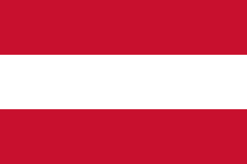

Indonesia dalam Angka — 2017 hingga 2025
Mulai Eksplorasi
Pasca Pandemi 2021–2025
Setelah pandemi yang menyebabkan penurunan jumlah kunjungan hingga 1,56 juta pada tahun 2021, sektor pariwisata Indonesia mulai menunjukkan pemulihan. Pada tahun 2025, angka kunjungan mencapai 15,39 juta atau meningkat sebesar 10,8% dari tahun sebelumnya.
Tren 5 tahun terakhir menunjukkan peningkatan yang konsisten dari tahun ke tahun.
Covid-19 · 2020–2021
Maret 2020 — dunia berhenti. Pandemi menghantam pariwisata Indonesia lebih dalam dari yang pernah terjadi. Dari puncak 16,1 juta di 2019, anjlok ke 4,05 juta di 2020, lalu ambruk ke 1,56 juta di 2021.
Jumlah Kunjungan Berdasarkan Kebangsaan 2025
Malaysia memimpin dengan 2,64 juta kunjungan. Australia naik ke 1,75 juta. Tiongkok tumbuh +12,2% menjadi 1,34 juta, sementara Timor Leste mengejutkan dengan 1,01 juta kunjungan.
Kawasan ASEAN mendominasi dengan total 6,36 juta kunjungan — 45,5% dari seluruh kunjungan 2025.
Intensitas Kunjungan Berdasarkan Negara Asal (Tahun 2025)
Peta interaktif berbentuk globe di bawah ini memvisualisasikan data pengunjung secara proporsional dari 150+ negara yang tercatat oleh BPS. Semakin gelap hijau warna suatu negara, semakin tinggi angka kunjungannya ke Indonesia. (Sentuh/geser globe untuk memutar, hover negara untuk melihat angka)
Data Lengkap 2017–2025
Hover / tap pada bar untuk melihat detail per tahun
Bandara · Pelabuhan · Darat — 2025
Bulan Apa Kunjungan Paling Tinggi?
Juli–Agustus selalu menjadi puncak karena bertepatan dengan liburan musim panas negara-negara asal wisatawan terbesar. Desember melonjak karena libur Natal & Tahun Baru global.
Profil Wisatawan Mancanegara Berdasarkan Kelompok Generasi · 2024 — Klik segmen atau baris untuk sorot data
Pengeluaran Wisatawan Mancanegara per Kunjungan · 2024


Hotel Berbintang per Provinsi · 2024 (%)
Bali memimpin TPK Hotel Berbintang 2024 dengan 62,36% — naik drastis dari 52,88% di 2023. Ini cerminan pemulihan penuh Bali sebagai destinasi wisata dunia.
Kalimantan Timur (65,11%) unggul berkat wisata bisnis (IKN). Rata-rata nasional mencapai 52,56% di 2024, naik dari 51,12% di 2023.
Dengan 15,39 juta kunjungan di 2025 dan momentum yang terus tumbuh, Indonesia semakin dekat melampaui rekor pre-pandemi 2019.
Sumber Data: Badan Pusat Statistik (BPS) Indonesia
Kunjungan Wisman per Kebangsaan & Pintu Masuk 2017–2025 · TPK Hotel Berbintang per Provinsi 2000–2024